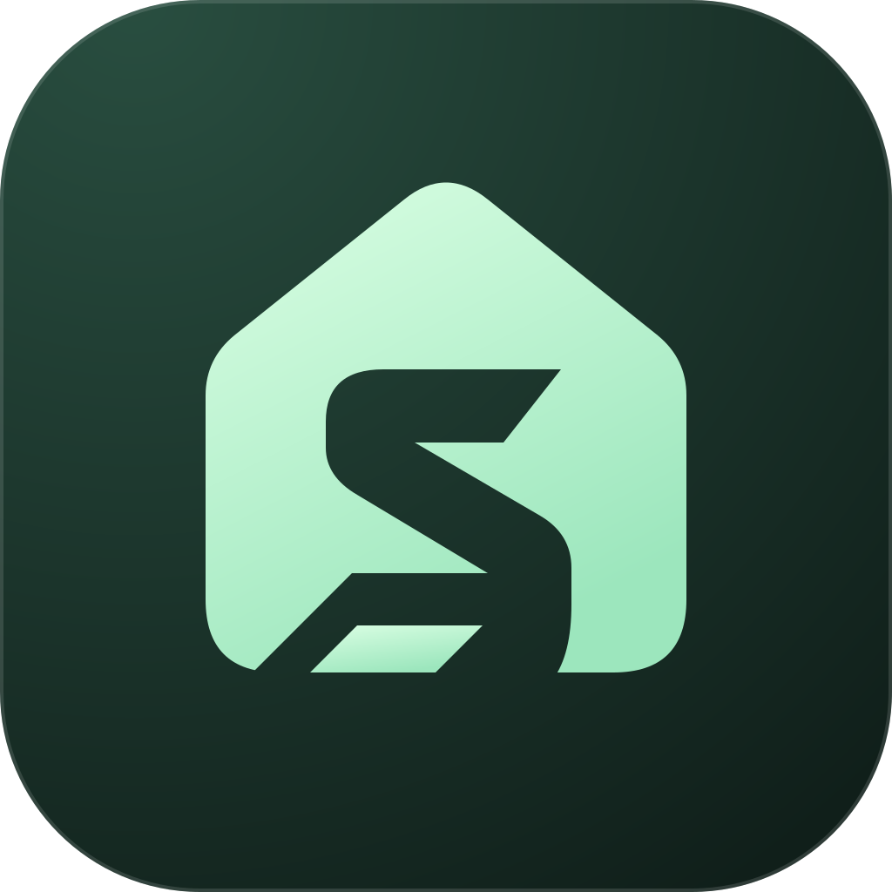

The foundation
A short architectural foot. Its diagonal follows the S and its flat edge aligns with the base of the home.
A small addition at the base, keeping the home and S intact. Two treatments to judge the finishing detail.

The foundation, in context.It gives the bottom of the S a deliberate finish and adds a second grounding point to the home.